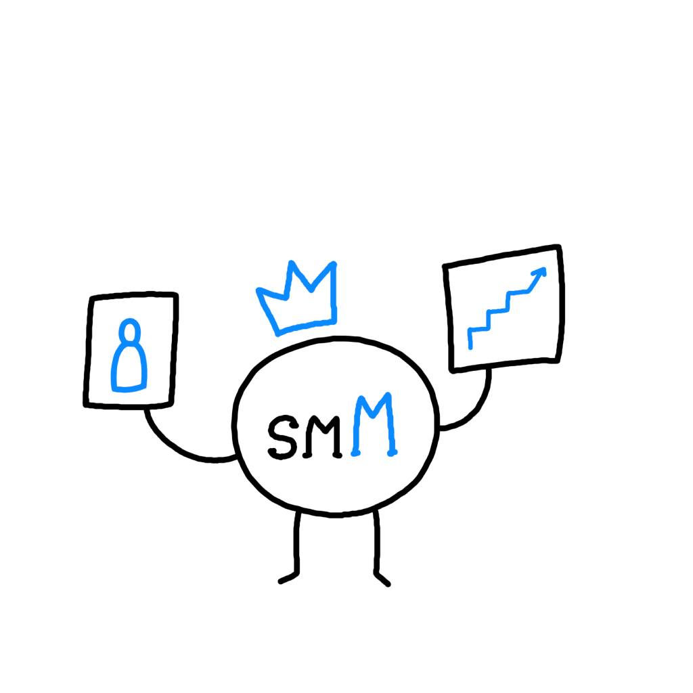
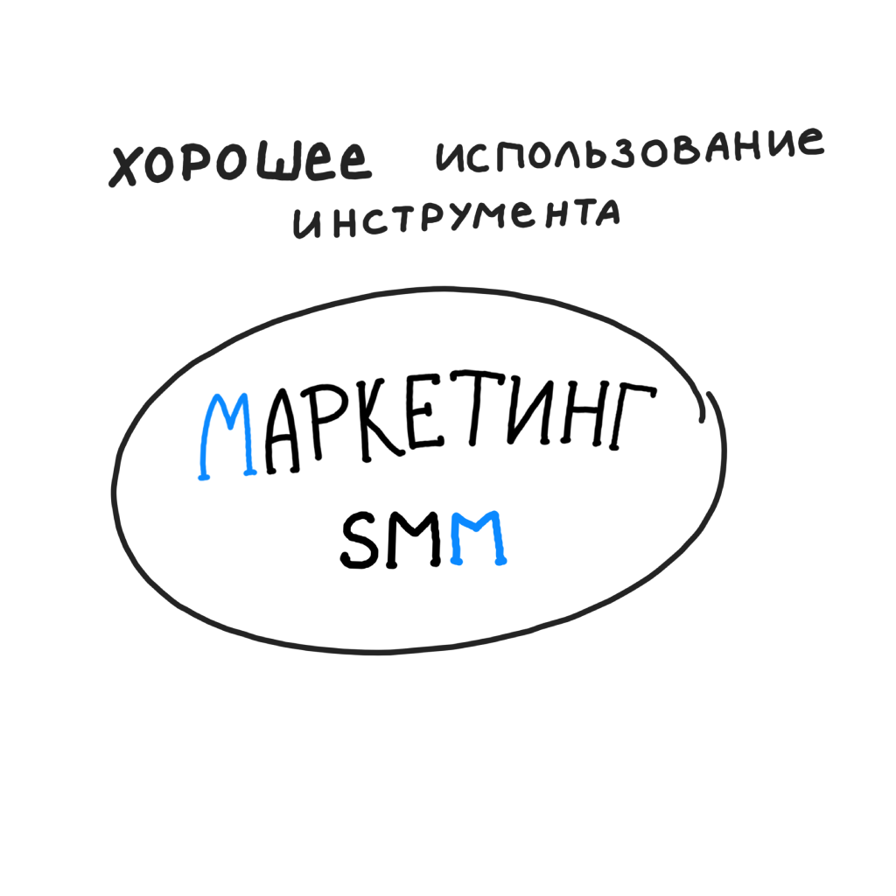
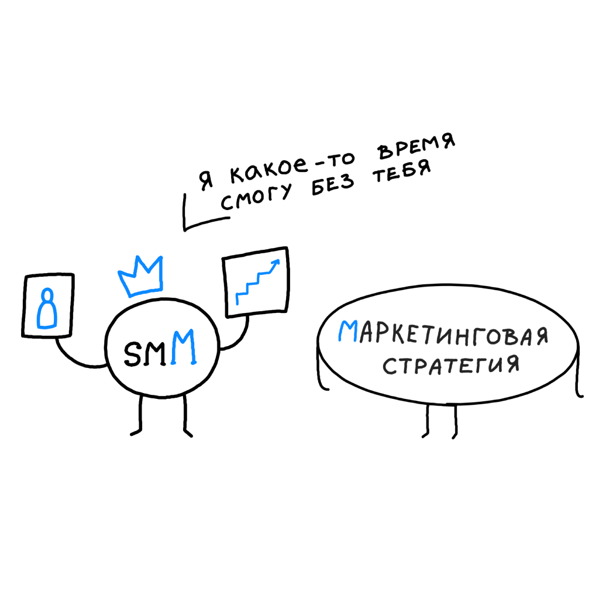
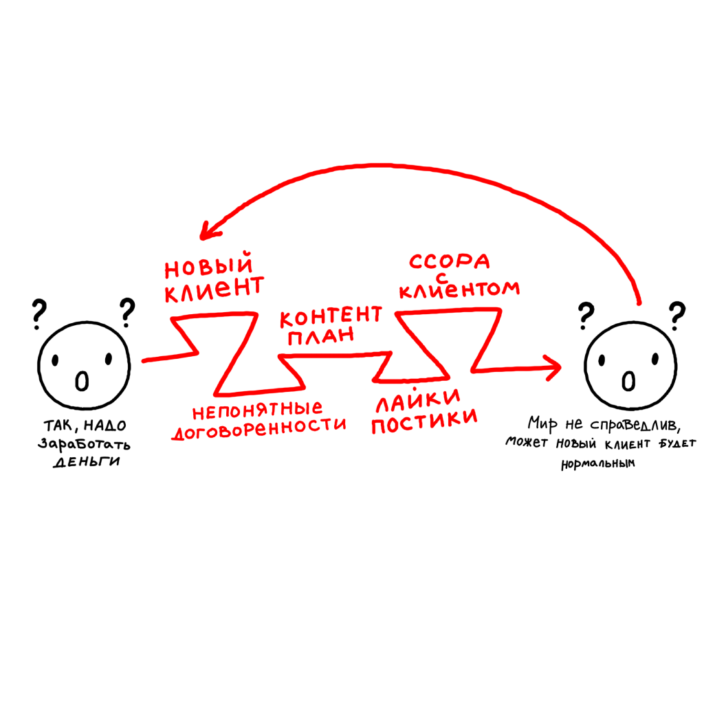
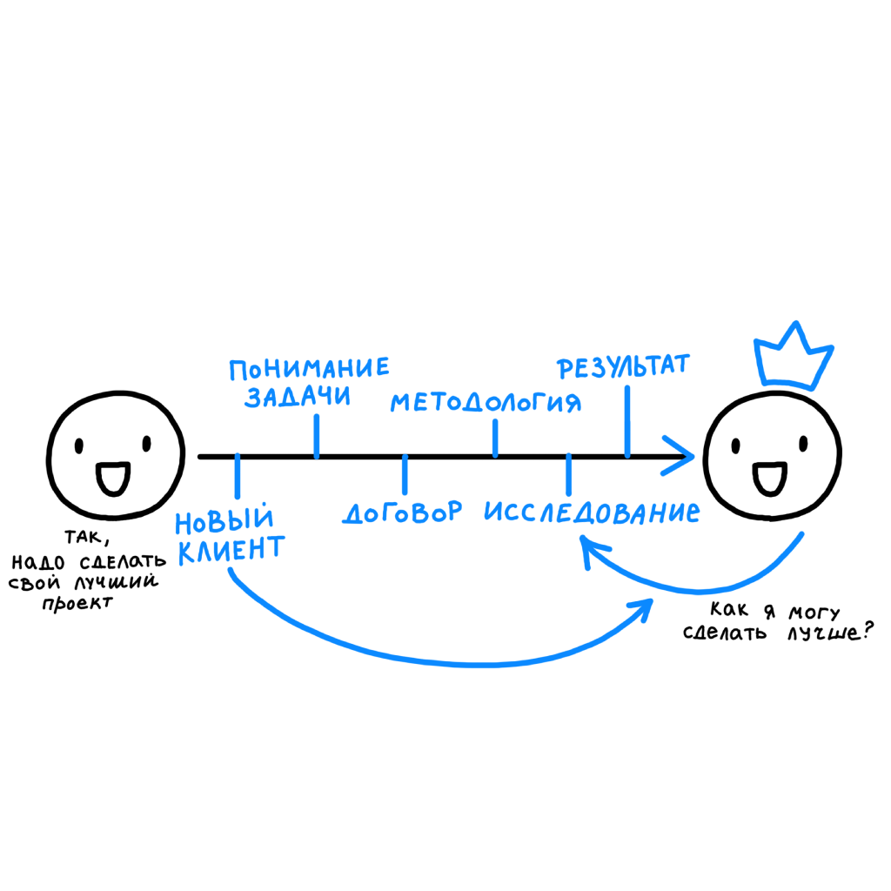
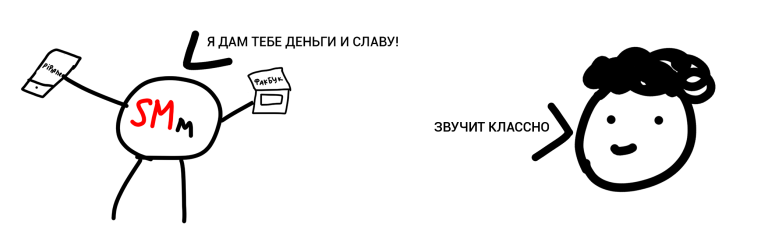
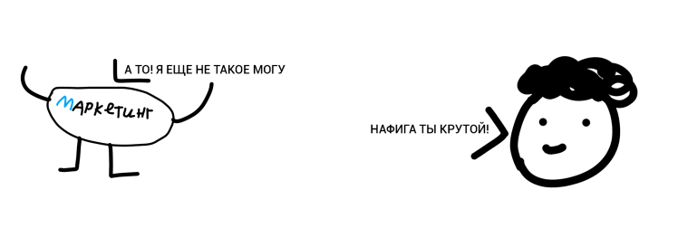
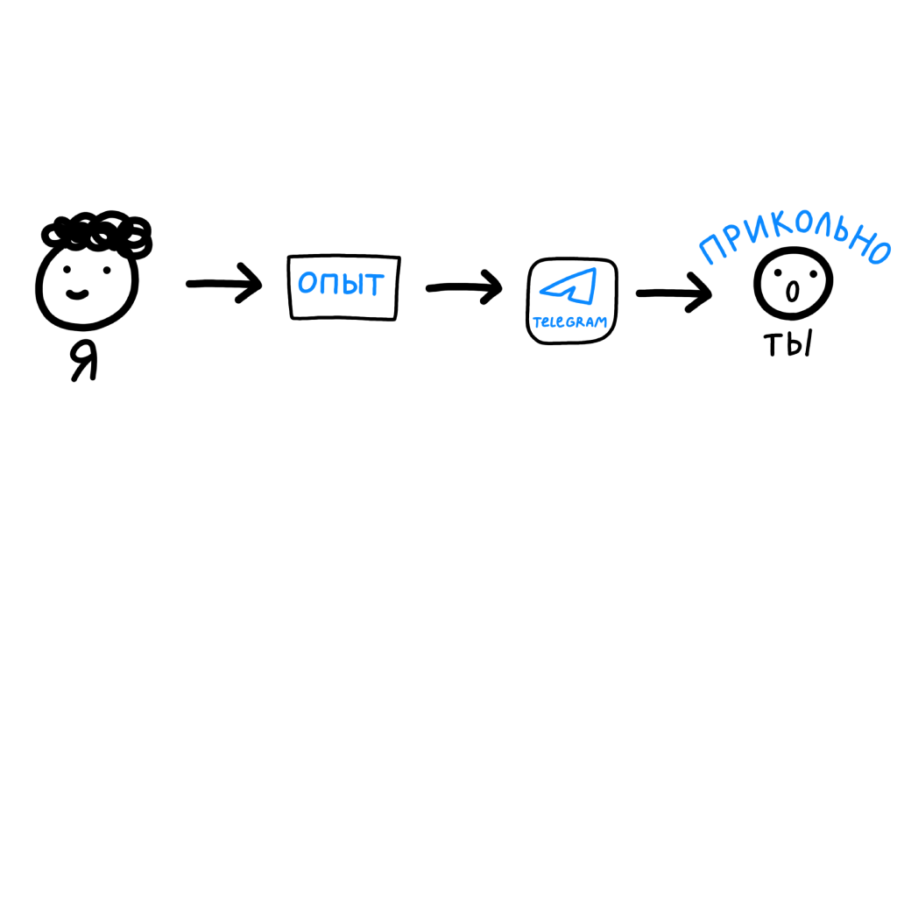
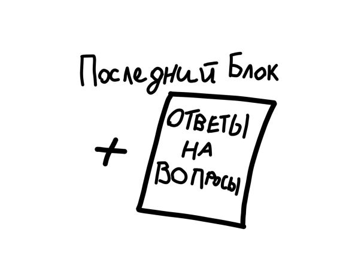
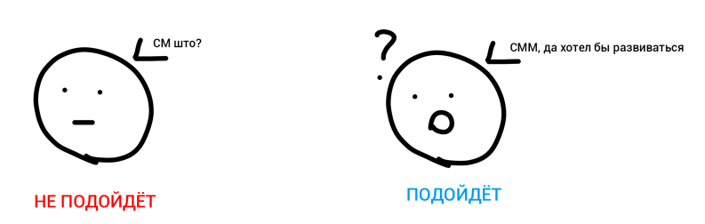

НЕЙМИНГ
Открой профессию с новой стороны
В нашей профессии существует 2 персонажа
Есть бизнес и у него существует маркетинговая стратегия, куда он вкладывает силы, деньги, время. Маркетинг приносит бизнесу клиентов, ресурсы, репутацию и узнаваемость.

И вот бизнес хочет расширить поток клиентов и количество трафика. Он берет и зовет SMm. (Слова social media - тут главные)

- 1. Собрать в аккаунте много подписчиков
- 2. Сделать так чтобы они ставили лайки и были вовлечены
- 3. Увеличить просмотры в историях
- 4. Все это завернуть с красивыми картинками в

Но идет время, продажи и прочие важные показатели бизнеса практически не меняться. Основные средства продолжают инвестировать в основной маркетинг, а SMm воспринимают как некую "Игрушку"


Арсенал инструментов и знаний который есть у SMm не позволяет ему зайти в союз с маркетингом. Они идут раздельно и их цели практически никак не пересекаются.


В конечном итоге SMm не так полезен бизнесу, в него инвестирует меньше денег и прочих средств и после первого косяка сразу от него уходят.

НО БЫВАЕТ И ДРУГОЙ ВАРИАНТ!
Существует smM (Где Marketing во главе), который делает все чтобы помочь бизнесу решить его задачу!
Главная задача smM-а - Решить задачи бизнеса, например он легко может встраиваться в союз с маркетинговой стратегией путем её продолжения в социальных сетях.
Но даже если у бизнеса нет большой маркетинговой стратегии, во главе smM подхода стоят инструменты маркетинга. А это означает что веся работа строиться на анализе, исследованиях и пользе для аудитории.
- 1. Закрыть задачи бизнеса
- 2. Поставить аудиторию на первое место
- 3. Подкрепить все исследованиями
- 4. Прогнозировать результат
- 5. Задается вопросом
В целом пул инструментов которые предоставляют соц.сети - один, но эти два подхода используют их по разному.
О СПЕЦИАЛИСТАХ
Рынок забит плохими курсами для обучения, которые очень манят своими заголовками о быстром заработке покупок машин, квартир, покраски волос в белый цвет и быстрого результата. В них говориться о базовых теоретических вещах, таких как: Что такое таргет, как составить коммерческих предложение, как публиковать посты. Но абсолютно ничего не говориться о том как работать и позиционировать себя в профессии
Из за неправильной картины мира которую навязывают плохие блогеры и курсы, начинающие специалисты страдают, выгорают, теряют мотивацию и уходят из профессии. Ноу опытных практикующих специалистов совсем другой взгляд на свою работу:
ОБО МНЕ
Меня зовут Игорь, и я долго пытался работать по принципу SMmшика, быстрее найти деньги, клиентов, продать подороже, сделать подешевле и в целом был не счастлив как специалист.
Поработав так продолжительное время, я начал искать причины моих постоянных провалов и их решения. Поиск привел меня в креативный бизнес, брендинг, большой маркетинг и нормальные бюджеты.

После работы в креативном агентстве, и изучения основ маркетинга, я начал изучать и интересоваться как можно применять все это в рамках социальных сетей. Так я и познакомился с новым подходом работы, с тех пор мы дружим и растем вместе.
ЧТО ТАКОЕ РАССЫЛКА
Часть этого пути и инсайды я упаковал в рассылку, на главной странице которой ты сейчас и находишься. Каждую неделю в течение 15 недель, тебе будут приходить письма в аудио формате, и тезисный текст о пройденной теме.
ЧТО В СООБЩЕНИЯХ?
Аудио сообщение в виде подкаста от 15 минут до 1 часа + Текстовый блок и основными мыслями и тезисами

ОБРАТНАЯ СВЯЗЬ
В течение всего курса вы сможете задавать вопросы по содержанию и контексту. Ответы на эти вопросы будут в последнем бонусном блоке для тех кто приобрел полную версию рассылки.
КОМУ НЕ ПОДОЙДЕТ
Рассылка не подойдет людям которые хотят начать изучать специальность, если не знаешь слова Таргет, вовлечение, EBB и CPC, лучше найти другой обучающий продукт. Но если ты знаком с основами, у тебя есть любой опыт в работе и ты понимаешь что такое работать в коммуникации, рассылка будет полезна.
СОДЕРЖАНИЕ РАССЫЛКИ
1️⃣ Введение в SMM
- 1. Разберем основные ошибки в понимании профессии
- 2. Полезное действие соцсетей: как вести соцсети, чтобы они продавали
- 3. Зачем бизнесу инвестировать в SMM?
- 4. Разберем задачи: бизнесовые, маркетинговые и коммуникационные
- 5. Почему SMM нужен не всем
2️⃣ Клиенты
- 1. Как позиционировать себя в разговоре с клиентом
- 2. Ошибки специалистов при общении с клиентом
- 3. О поднятии чека на услуги
- 4. Брифинг: что и как спросить у клиента (+Шаблон брифинга)
- 5. Когда и как заключать договора на свои услуги
3️⃣ Анализ в SMM
- 1. Что анализировать?
- 2. Как анализировать?
- 3. Почему нельзя работать без анализа и исследований
- 4. Методология анализа ЦА и конкурентов
- 5. Сервисы анализа
4️⃣ Контент
- 1. Что выкладывать в соцсети
- 2. Лучшие действия в контент маркетинге
- 3. Почему контент-планы устарели и что использовать вместо них
- 4. Превращаем бизнес в контент, ресурсный подход в соцсетях
- 5. Красивые картинки в инстаграме, нужны?
5️⃣ Продвижение
- 1. Как работать с таргетированной рекламой
- 2. О целях в таргетированной рекламе
- 3. UGC и SMO, что это и почему это важно
- 4. Как выбрать правильного блогера
- 5. Форматы сотрудничества и работа с блогерами